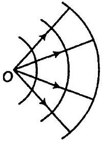
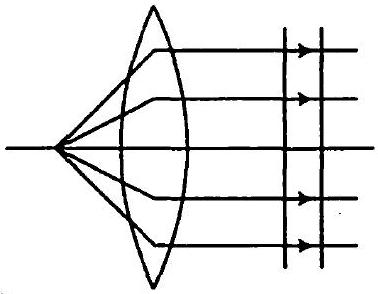
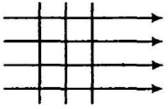

जब एकवर्णीय प्रकाश दो माध्यमों को पृथक करने वाली सतह पर आपतित होता है, तब परावर्तित एवं अपवर्तित दोनों प्रकाश की आवृत्तियाँ समान होती हैं। स्पष्ट कीजिए क्यों?
जब प्रकाश विरल से सघन माध्यम में गति करता है तो उसकी चाल में कमी आती है। क्या चाल में आई कमी प्रकाश तरंगों द्वारा संचारित ऊर्जा की कमी को दर्शाती है?
प्रकाश की तरंग अवधारणा में, प्रकाश की तीव्रता का आकलन तरंग के आयाम के वर्ग से किया जाता है। वह क्या है जो प्रकाश की फ़ोटॉन अवधारणा में प्रकाश की तीव्रता का निर्धारण करता है?
जब दो क्रॉसित पोलेराइडों के बीच में पोलेराइड की एक तीसरी शीट को घुमाया जाता है तो पारगमित प्रकाश की तीव्रता में होने वाले परिवर्तन की विवेचना कीजिए।
589 nm तरंगदैर्घ्य का एकवर्णीय प्रकाश वायु से जल की सतह पर आपतित होता है। (a) परावर्तित तथा (b) अपवर्तित प्रकाश की तरंगदैर्घ्य, आवृत्ति तथा चाल क्या होगी? जल का आवर्तनांक 1.33 है।
परावर्तित प्रकाश की तरंगदैर्घ्य, आवृत्ति तथा चाल क्या होगी?
अपवर्तित प्रकाश की तरंगदैर्घ्य, आवृत्ति तथा चाल क्या होगी?
निम्नलिखित दशाओं में प्रत्येक तरंगाग्र की आकृति क्या है?
किसी बिंदु स्रोत से अपसरित प्रकाश।

उत्तल लेंस से निर्गमित प्रकाश, जिसके फ़ोकस बिंदु पर कोई बिंदु स्रोत रखा है।

किसी दूरस्थ तारे से आने वाले प्रकाश तरंगाग्र का पृथ्वी द्वारा अवरोधित (intercepted) भाग।

(a) काँच का अपवर्तनांक 1.5 है। काँच में प्रकाश की चाल क्या होगी? (निर्वात में प्रकाश की चाल 3.0 × 108 m s-1 है।) (b) क्या काँच में प्रकाश की चाल, प्रकाश के रंग पर निर्भर करती है? यदि हाँ, तो लाल तथा बैंगनी में से कौन-सा रंग काँच के प्रिज़्म में धीमा चलता है?
काँच का अपवर्तनांक 1.5 है। काँच में प्रकाश की चाल क्या होगी? (निर्वात में प्रकाश की चाल 3.0 × 108 m s-1 है।)
क्या काँच में प्रकाश की चाल, प्रकाश के रंग पर निर्भर करती है? यदि हाँ, तो लाल तथा बैंगनी में से कौन-सा रंग काँच के प्रिज़्म में धीमा चलता है?
यंग के द्विझिरी प्रयोग में झिरियों के बीच की दूरी 0.28 mm है तथा परदा 1.4 m की दूरी पर रखा गया है। केंद्रीय दीप्त फ्रिंज एवं चतुर्थ दीप्त फ्रिंज के बीच की दूरी 1.2 cm मापी गई है। प्रयोग में उपयोग किए गए प्रकाश की तरंगदैर्घ्य ज्ञात कीजिए।
यंग के द्विझिरी प्रयोग में, λ तरंगदैर्घ्य का एकवर्णीय प्रकाश उपयोग करने पर, परदे के एक बिंदु पर जहाँ पथांतर λ है, प्रकाश की तीव्रता K इकाई है। उस बिंदु पर प्रकाश की तीव्रता कितनी होगी जहाँ पथांतर λ3 है?
यंग के द्विझिरी प्रयोग में व्यतिकरण फ्रिंजों को प्राप्त करने के लिए, 650 nm तथा 520 nm तरंगदैर्घ्यों के प्रकाश-पुंज का उपयोग किया गया। (a) 650 nm तरंगदैर्घ्य के लिए परदे पर तीसरे दीप्त फ्रिंज की केंद्रीय उच्चिष्ठ से दूरी ज्ञात कीजिए। (b) केंद्रीय उच्चिष्ट से उस न्यूनतम दूरी को ज्ञात कीजिए जहाँ दोनों तरंगदैर्घ्यों के कारण दीप्त फ्रिंज संपाती (coincide) होते हैं।
650 nm तरंगदैर्घ्य के लिए परदे पर तीसरे दीप्त फ्रिंज की केंद्रीय उच्चिष्ठ से दूरी ज्ञात कीजिए।
केंद्रीय उच्चिष्ट से उस न्यूनतम दूरी को ज्ञात कीजिए जहाँ दोनों तरंगदैर्घ्यों के कारण दीप्त फ्रिंज संपाती (coincide) होते हैं।